33 figures from FIGURE_CONTRADICTIONS.md, worst first (7 high).
Each panel shows the recorded claim and the prompt it is measured against.
Drag on a panel to box a problem, click a box to edit or delete it.
ok = adjudicated, nothing to do. Buttons write
contradiction-feedback.jsonl / contradiction-ok.jsonl.
Row h) has no label. It is the only row whose cells reach into column 0, i.e. the leftmost cell occupies exactly where the h) would print. The clue list has an h), so the row-to-clue mapping breaks at that row. No label was invented.
Rozwiąż krzyżówkę wpisując w kratki odpowiednie cyfry. Hasło w zacieniowanych okienkach, to przybliżona wartość 2019 . Hasło nie jest oceniane. a) Kwadrat największej dwucyfrowej liczby pierwszej. b) Liczba, której 2% to 88. c) Liczba MCMLIX zapisana cyframi arabskimi. d) Długość wysokości trójkąta równobocznego o boku 22 3 . e) Długość boku trójkąta równobocznego o polu 225 3 . f) Największy wspólny dzielnik liczb 63 i 105. g) Wartość wyrażenia: 8000 3 − − 125 · 27 3 − ( 7 · 9 − 6 · 11 ) h) Największa liczba całkowita mniejsza od 123,75. i) Wartość wyrażenia: 2 2 3 − ( 2 2 ) 3 2 2 . j) 37% liczby 10100. k) Pole pierścienia kołowego ograniczonego okręgami o średnicach 20 i 6. Przyjmij π = 3 . l) Przybliżenie liczby 72999,99 do setek. m) Czas w godzinach w jakim rowerzysta pokona drogę 24 km, gdyby jego średnia prędkość jazdy na tej trasie była równa 200 metrów na minutę. n) Długość przyprostokątnych w trójkącie prostokątnym równoramiennym o polu 72 j². o) Wartość x w wyrażeniu: 13 5 · 13 8 · 13 6 13 10 = 13 x p) Sześcian największej jednocyfrowej liczby pierwszej. q) Liczba która nie jest ani dodatnia, ani ujemna. r) Objętość sześcianu o krawędzi 9. s) Średnia arytmetyczna liczb: 40; 32,04; 36,6; 44,06; 12,3. t) Cyfra X dziesiątek pięciocyfrowej liczby 523X6, o której wiadomo, że jest podzielna przez 3 i 4.
original 776×2460
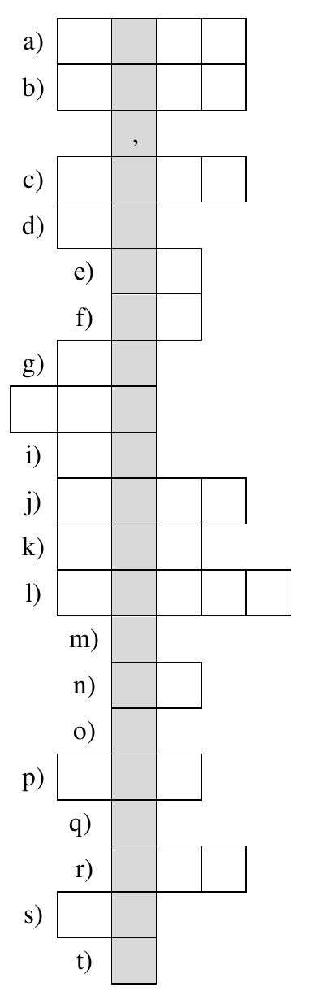
redraw
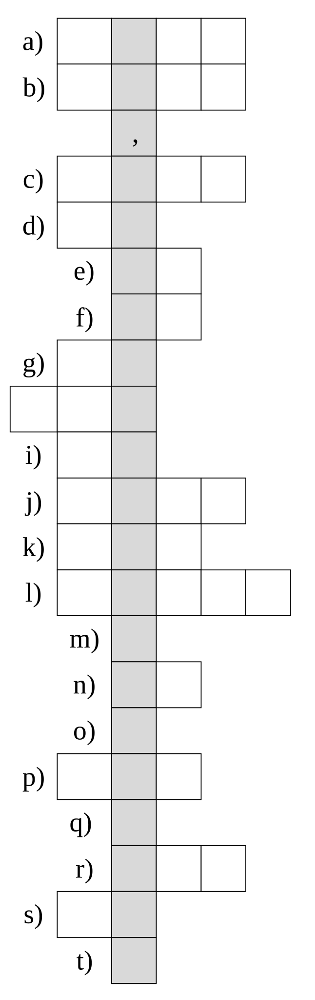
2. wojewodzki_2019_kujawsko-pomorskie_q14_fig1 40422428highContradicts the prompt text
Prompt: „BC jest średnicą tego okręgu”. As drawn, chord CB misses the fitted centre by 6.9 px (length 329.3 vs diameter 329.6). The solution is Thales on that diameter.
Trójkąt ABC jest wpisany w okrąg o środku O , gdzie BC jest średnicą tego okręgu. Prosta a jest styczną do okręgu w punkcie A . Podaj miarę kąta α .
original 591×379
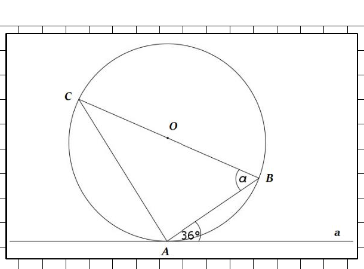
redraw
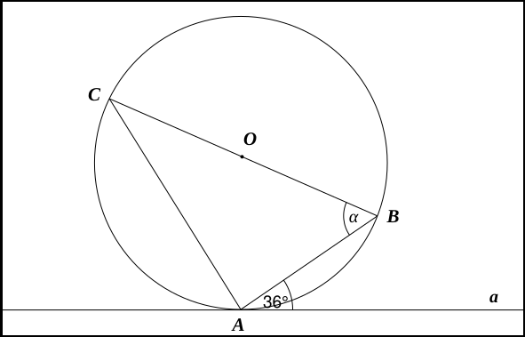
3. wojewodzki_2019_lubuskie_q18_fig1 d09fa5efhighContradicts the prompt text
Prompt: „Ile liter polskiego alfabetu (przedstawionych obok)…”. The figure shows V and X — not letters of the Polish alphabet — and omits every diacritic (ą, ć, ę, ł, ń, ó, ś, ź, ż). Q is absent. The count of symmetry axes is taken off exactly this set.
Ile liter polskiego alfabetu (przedstawionych obok) ma więcej niż jedną oś symetrii?
original 450×320
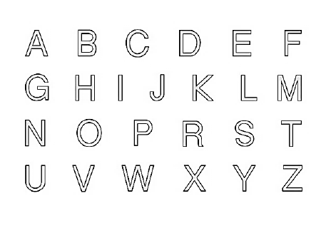
redraw
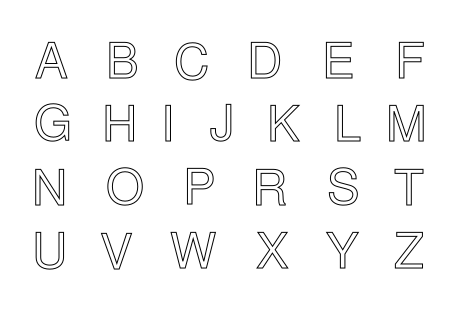
4. wojewodzki_2019_podlaskie_q22_fig1 04454fbdhighContradicts the prompt text
Prompt: „siatką ostrosłupa prawidłowego czworokątnego”, so the central face must be a square. Measured 227 × 240 px, and it is not aligned to the grid it sits on.
Figura na rysunku jest siatką ostrosłupa prawidłowego czworokątnego. Wiedząc, że | AB | = 4 cm, | BC | = 2 5 cm, oblicz objętość tego ostrosłupa.
The task is to complete a net on grid paper so it has exactly one symmetry axis — but the grid is not square (verticals 38.2 px apart, horizontals 40.75), and the drawn horizontal symmetry axis is not level: it drops 3.7 px across the width.
Na rysunku przedstawiono prostokąt i jego osie symetrii. Uzupełnij rysunek tak, aby powstała siatka graniastosłupa prawidłowego trójkątnego, która ma tylko jedną oś symetrii. Przedstaw dwa różne rozwiązania.
original 380×390redraw
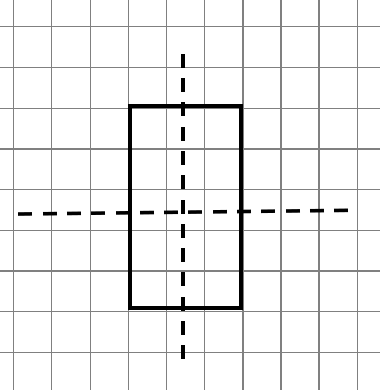
6. wojewodzki_2022_dolnoslaskie_q6_fig1 5a6b07f0highContradicts the prompt text
Prompt: „ich wierzchołki leżą odpowiednio na prostych a₆,a₅,a₁,a₂ oraz a₇,a₅,a₁,a₃”. No vertex sits on its line: C 4.2 px below a₁, D 3.7 above a₂, G 7.8 below a₁, H 6.3 above a₃, F 6.8 below a₅, E 6.5 above a₇ — E leaves a visible 2 px gap. Seating the vertices on the parallels is the construction.
Siedem prostych poprowadzono tak, że są równoległe i odległość między każdymi dwiema sąsiednimi jest równa 1. Kwadraty ABCD i EFGH umieszczono tak, że ich wierzchołki leżą odpowiednio na prostych: a 6 , a 5 , a 1 , a 2 oraz a 7 , a 5 , a 1 , a 3 . O ile jest większe pole kwadratu EFGH od pola kwadratu ABCD ? Odpowiedź uzasadnij, zapisując odpowiednie obliczenia.
original 1440×680
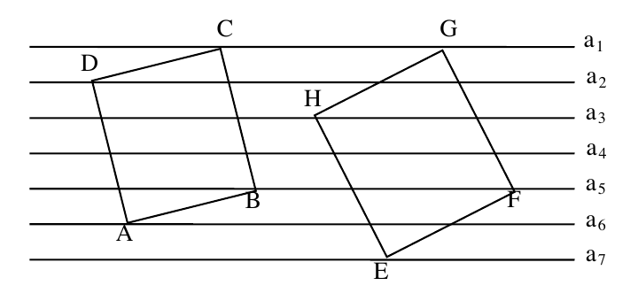
redraw
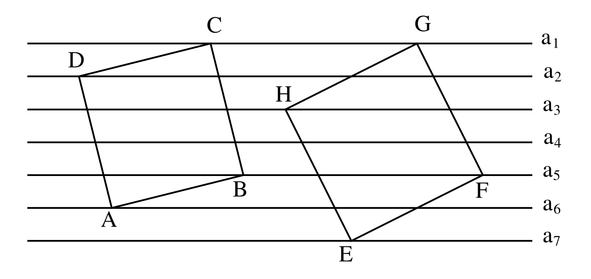
7. wojewodzki_2026_kujawsko-pomorskie_q22_fig1 f783b98chighContradicts the prompt text
Prompt fully specifies the construction: „łuki AC i AB są półokręgami, zaś BC jest ćwiartką okręgu o środku A”. None of the three arcs is compass-true — perpendicular ellipse fits (rms 0.34/0.33/0.53 px) bulge up to 6 px outside it, and forcing the quarter arc onto centre A gives rms 1.74. The question is which of F₁/F₂ is larger.
Trójkąt ABC jest prostokątny i równoramienny, łuki AC i AB są półokręgami, zaś BC jest ćwiartką okręgu o środku A . Która z figur F 1 czy F 2 ma większe pole (patrz rysunek)?
Same family, same defect: the bottom-right cell is not drawn. The last horizontal rule and the last vertical rule both stop short, so a cell the solver is asked to fill has no box. Recurs across four papers and both stages.
W puste, białe pola „liczbowej krzyżówki” wstaw liczby tak, aby wszystkie działania były poprawne.
Same family, same defect: the bottom-right cell is not drawn. The last horizontal rule and the last vertical rule both stop short, so a cell the solver is asked to fill has no box. Recurs across four papers and both stages.
W puste białe pola „liczbowej krzyżówki” wstaw liczby tak, aby wszystkie działania były poprawne.
Same family, same defect: the bottom-right cell is not drawn. The last horizontal rule and the last vertical rule both stop short, so a cell the solver is asked to fill has no box. Recurs across four papers and both stages.
W puste białe pola „liczbowej krzyżówki” wstaw liczby tak, aby wszystkie działania były poprawne.
Same family, same defect: the bottom-right cell is not drawn. The last horizontal rule and the last vertical rule both stop short, so a cell the solver is asked to fill has no box. Recurs across four papers and both stages.
W puste białe pola „liczbowej krzyżówki” wstaw liczby tak, aby wszystkie działania były poprawne.
Two problems. (a) The rectangle is labelled 120° but as scanned (479 × 256) the marked angle is 123.7°. (b) The source PDF fails to embed the degree sign — it prints as a .notdef box. This is the one figure where the redraw does not reproduce the scan: it was reproportioned to 479 × 276.55 (aspect exactly √3) so the angle really is 120°. Flagged because it breaks rule 2 deliberately.
Długość przekątnej prostokąta przedstawionego na rysunku, którego krótszy bok ma długość 12 cm jest równa
All 12 prism edges are solid — hidden edges DA/DC/DH are not dashed — while ZX/ZY in the same drawing are.
Na rysunku przedstawiono graniastosłup prawidłowy czworokątny ABCDEFGH . Punkt Z jest środkiem krawędzi bocznej AE , a punkty X i Y są środkami odpowiednio krawędzi AB i EH . Kąt XZY ma miarę 120 ° . Uzasadnij, że ten graniastosłup jest sześcianem. Zapisz wszystkie obliczenia.
Prompt is about quarter-circles on the sides of a right triangle; the scan's three arcs are measurably elliptical — 130.5×134.9, 177.2×170.2, 224.9×216.7.
Udowodnij, że suma pól ćwierćkół zbudowanych na przyprostokątnych trójkąta prostokątnego jest równa polu ćwierćkoła zbudowanego na jego przeciwprostokątnej.
The cutting triangle's apex does not land on cube vertex D: edges D-K and D-B cross at (112, 236.5), ~5 px up-right of D (108.2, 239.5). Edge B-C meets the CG vertical ~3 px above C.
Sześcian o krawędzi 6 cm przecięto płaszczyzną przechodzącą przez przekątną jego podstawy i środek krawędzi bocznej (rysunek obok). Oblicz pole powierzchni całkowitej uzyskanego w ten sposób wielościanu o 7 ścianach.
original 475×335
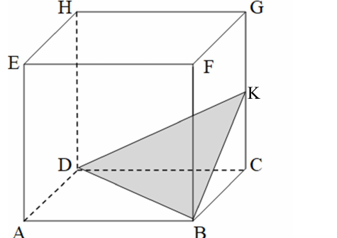
redraw
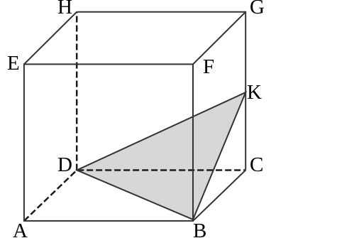
16. wojewodzki_2021_dolnoslaskie_q4_fig1 98281fcemedContradicts the prompt text
Not to scale: beams drawn 500 px long on a 50 px square section (10:1) where the prompt's 10 × 10 × 200 cm is 20:1.
Trzy prostopadłościenne belki ‒ każda o wymiarach 10 cm × 10 cm × 200 cm sklejono tak, jak na rysunku. Oblicz pole powierzchni otrzymanej bryły.
The back-right lateral edge is hidden but drawn solid, while the three back bottom edges are dashed. Every lateral edge also leans right by 1–1.8 px top-to-bottom against dead-level horizontals (a scan shear).
Graniastosłup prawidłowy sześciokątny o wszystkich krawędziach długości 8 cm przecięto, otrzymując graniastosłup trójkątny i graniastosłup pięciokątny (rysunek obok). Oblicz pole powierzchni całkowitej graniastosłupa pięciokątnego.
Area-by-counting question over two grids, but figure A's leftmost gridline is grey 233 — effectively invisible — where every sibling is black, and the two figures' fills differ (189 vs 209) though nothing distinguishes them. The redraw departs from the scan here and draws that gridline black.
Dane są dwie figury: A i B (rysunek). Przyjmując, że bok jednej kratki ma 1, oblicz ich pola. Zapisz obliczenia i odpowiedź.
original 830×415
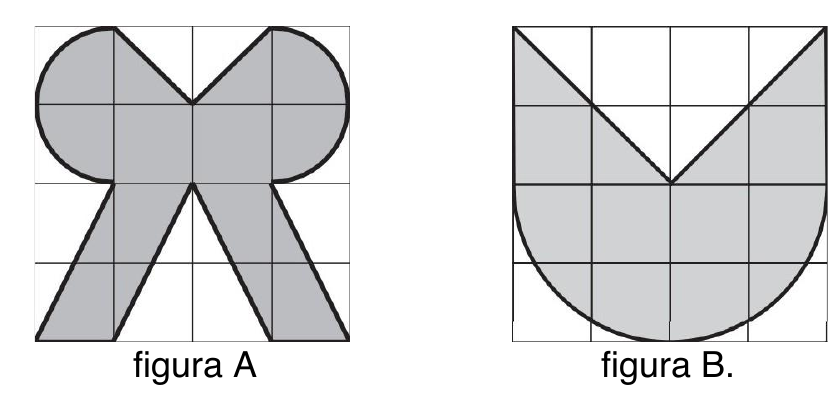
redraw
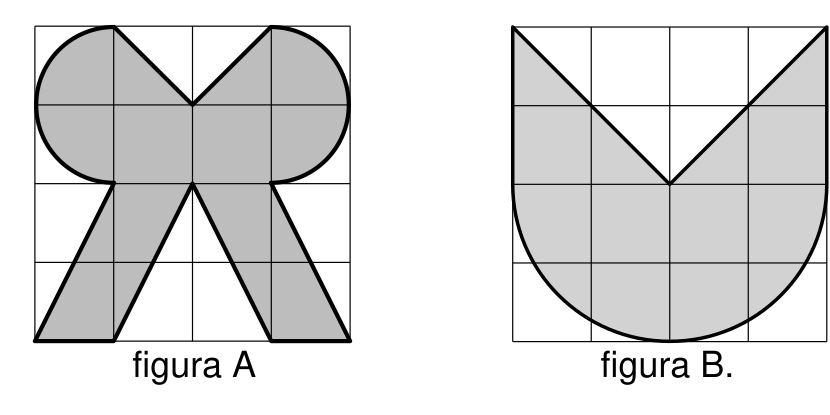
19. wojewodzki_2023_mazowieckie_q4_fig1 08be15aamedContradicts the prompt text
The plotted curve is not the hyperbola it represents: a smoothed spline through the six markers, sagging up to 12 px off y = 20/x between (1,20)–(2,10) and (2,10)–(4,5), and running past both end markers. The markers themselves are exact.
Na wykresie wyrażającym zależność między liczbą pracowników a czasem potrzebnym na wykonanie pewnej pracy zaznaczono niektóre punkty. Wybierz poprawną odpowiedź spośród oznaczonych literami A i B oraz C i D. Trzech pracowników, pracujących z taką samą wydajnością, wykonają tę pracę w: Pracując z taką samą wydajnością w ciągu 1 godz. 15 minut tę pracę wykona:
Three unit joints are drawn solid where the same rule dashes every comparable joint in the figure — (0,3,5)-(1,3,5), (3,5,5)-(3,6,5), (4,5,5)-(4,6,5). The projection is also not isometric (horizontal axes foreshorten 30.85 vs 50.10 px, vertical 54.80).
Przystające kwadraty o wymiarach 1 × 1 łączymy dokładnie dwoma bokami każdego z nich tak, aby zarówno zewnętrzny jak i wewnętrzny brzeg otrzymanej figury były kwadratami. Otrzymaną figurę nazywamy ramą R n , gdzie n oznacza długość boku zewnętrznego kwadratu i n jest liczbą naturalną większą od 2. Poniżej na rysunku przedstawiono ramy R 3 oraz R 4 . a) (1p) Zapisz liczbę osi symetrii każdej figury R n . b) (2p) Udowodnij, że pole powierzchni ramy R n jest liczbą całkowitą podzielną przez 4. c) (2p) Podaj wszystkie wartości n , dla których obwód ramy R n jest liczbą całkowitą podzielną przez 16. Odpowiedź uzasadnij. Z identycznych sześcianów o wymiarach 1 × 1 × 1 zbudowano bryłę B n , gdzie n jest liczbą naturalną większą od 2, w taki sposób, że spełnia poniższe warunki: każdy z wykorzystanych sześcianów o wymiarach 1 × 1 × 1 jest połączony albo dwiema albo trzema ścianami z innymi sześcianami; dokładnie sześć ścian bryły jest ramą R n . każda z dwunastu najdłuższych krawędzi bryły B n ma długość równą n . Na rysunku obok przedstawiono bryłę B 6 . d) (2p) Podaj wyrażenie przedstawiające liczbę sześcianów o wymiarach 1 × 1 × 1 , z których składa się bryła B n . Odpowiedź zapisz po redukcji wyrazów podobnych. e) (3p) Znajdź n , dla którego pole powierzchni całkowitej bryły B n jest równe 264. Zapisz obliczenia.
The 120° mark is a true circular arc centred 14–15 px right of vertex A (fit rms 0.35–1.08; forced onto A the radius wanders 58.5–68.5). It marks an angle at a point that is not the angle's vertex. Both figures share the construction.
Informacja do zadań 6. i 7. W okręgu o środku w punkcie A poprowadzono cięciwę BC . Długość promienia tego okręgu wynosi 6, kąt ∡ BAC ma miarę 120°, a odległość punktu A od cięciwy BC jest równa 3. Na okręgu zaznaczono punkt D . Następnie narysowano łuk BC , którego środkiem jest środek cięciwy BC i zaznaczono na nim punkt E . Figurę złożoną z łuku BDC , łuku BEC oraz zacieniowanej powierzchni pomiędzy nimi nazwano księżycem K (rysunek obok). Ile jest równy obwód księżyca K ?
The 120° mark is a true circular arc centred 14–15 px right of vertex A (fit rms 0.35–1.08; forced onto A the radius wanders 58.5–68.5). It marks an angle at a point that is not the angle's vertex. Both figures share the construction.
Informacja do zadań 6. i 7. W okręgu o środku w punkcie A poprowadzono cięciwę BC . Długość promienia tego okręgu wynosi 6, kąt ∡ BAC ma miarę 120°, a odległość punktu A od cięciwy BC jest równa 3. Na okręgu zaznaczono punkt D . Następnie narysowano łuk BC , którego środkiem jest środek cięciwy BC i zaznaczono na nim punkt E . Figurę złożoną z łuku BDC , łuku BEC oraz zacieniowanej powierzchni pomiędzy nimi nazwano księżycem K (rysunek obok). Ile jest równe pole powierzchni księżyca K ?
original 494×460
redraw
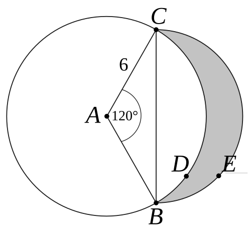
23. wojewodzki_2025-2026_pomorskie_q3_fig1 497248c9medContradicts the prompt text
Not to scale: a 5 cm notch in a 15 cm cube is 1/3; the drawn notch chord is 0.50 of the cube edge (137/272 px). All seven cm callouts therefore disagree with the geometry they label.
Z sześcianu o krawędzi 15 cm wycięto cztery jednakowe graniastosłupy prawidłowe trójkątne o długości krawędzi podstawy 5 cm i wysokości 15 cm i otrzymano bryłę pokazaną na rysunku. Oblicz objętość otrzymanej bryły. Zapisz wszystkie obliczenia.
original 680×500
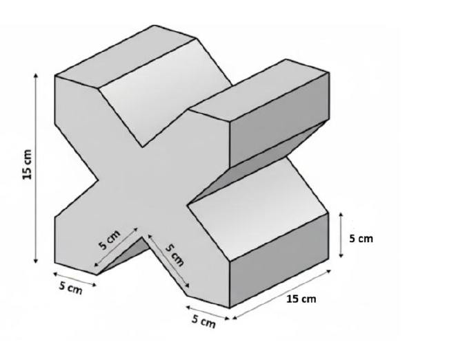
redraw
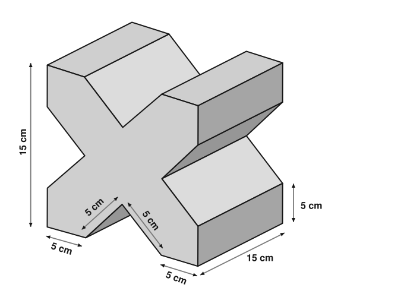
24. wojewodzki_2026_dolnoslaskie_q5_fig1 1bcad3d7medContradicts the prompt text
Prompt: „ośmiokąta foremnego ABCDEFGH”. The drawn octagon is irregular — edge lengths run 110–112 px — in a plane figure with no projection to excuse it.
Przekątną AE ośmiokąta foremnego ABCDEFGH przedłużono poza punkt E do punktu P takiego, że | FP | = | AG | . Oblicz różnicę miar kątów: | ∢ EFP | − | ∢ AGH | .
original 480×520
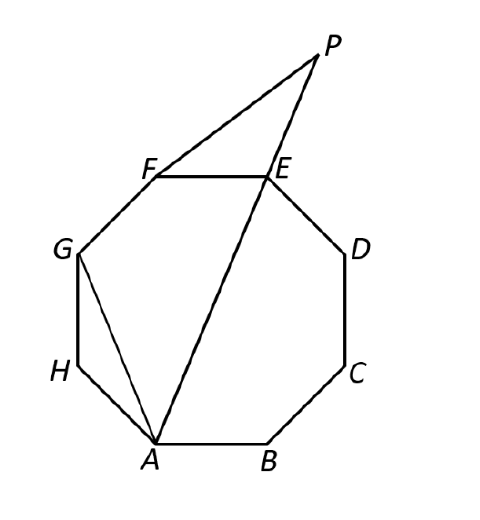
redraw
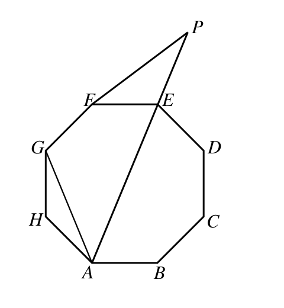
25. wojewodzki_2011_podkarpackie_q21_fig1 3e1489adlowContradicts the prompt text
Pie sweeps measure 4.3° / 74.6° / 282.4° = 1.2 / 20.7 / 78.4 % against its own printed 1 / 21 / 78, and the chart runs counter-clockwise. The percentages are also given in the prompt text, so the reader is not misled.
Pokój Malwiny, znajdujący się na poddaszu, ma kształt graniastosłupa prostego. Jego wymiary podano na rysunku. Wykorzystując poniższe informacje oblicz, ile litrów tlenu znajduje się w tym pokoju. (Skład procentowy powietrza: tlen 21%, azot 78%, inne gazy 1%.)
Of the two dots inside the right-angle mark at D, the second — (201.8, 423) — is not on the angle bisector.
Podstawą ostrosłupa ABCDS przedstawionego na rysunku jest kwadrat. Uzasadnij, że trójkąty ABS i CBS są prostokątne. Oblicz pole powierzchni bocznej tego ostrosłupa. Narysuj siatkę tego ostrosłupa. Zapisz obliczenia.
Przekrój graniastosłupa prawidłowego czworokątnego jest prostokątem, zaznaczonym na rysunku. Wymiary tego prostokąta wynoszą odpowiednio 4 cm i 0,5 dm . Wiedząc, że wysokość tego graniastosłupa jest równa 0,5 dm to objętość tego graniastosłupa wynosi:
Parallelograms 1 and 2 sit on their grid intersections; parallelogram 3 does not — ~1.5 px left and ~1 px above. The construction rule chains each shape off the previous one's midpoint.
Marysia narysowała w układzie współrzędnych równoległobok nr 1. Kolejne przystające do niego równoległoboki rysowała według zasady (rysunek): środek górnego boku ostatnio narysowanego równoległoboku to dolny lewy wierzchołek następnego równoległoboku . W ten sposób Marysia narysowała n równoległoboków. Współrzędna y prawego górnego wierzchołka równoległoboku o numerze n jest równa
Squares on the sides of a right triangle: G and F sit ~1.5 px off the exact perpendicular construction.
Dany jest trójkąt prostokątny ABC , w którym kąt ACB jest prosty. Na bokach AC , AB i BC zbudowano kwadraty ACDE , AFGB , BHIC , a środki przekątnych tych kwadratów oznaczono odpowiednio przez P , Q i R (patrz rysunek obok). Oznaczmy długości boków BC , AC i AB odpowiednio a , b i c . a) (3p) Udowodnij, że czworokąt ABRP jest trapezem i zapisz jego pole w zależności od długości a i b . b) (3p) Udowodnij, że pole Δ AQB + pole Δ ABC = ( a + b 2 ) 2 . c) (4p) Wykaż, że obwód Δ PQR < ( a + b + c ) · 2 .
All 18 edges of the hexagonal prism are solid; no hidden-line dashing anywhere.
Punkt P jest środkiem krawędzi ED graniastosłupa prawidłowego sześciokątnego, przedstawionego na rysunku obok. Pole trójkąta ABP jest równe polu ściany bocznej tej bryły. Objętość graniastosłupa jest równa 486 cm³. Oblicz pole powierzchni całkowitej tego graniastosłupa.
original 880×940redraw
32. wojewodzki_2024-2025_slaskie_q17_fig1 19a42c92lowContradicts the prompt text
Prompt gives \|AB\|:\|CD\|:\|DA\| = 16:10:10; drawn 440.3 : 257.2 : 286.2 px = 16 : 9.35 : 10.4. Also K and L sit ~3 px off the true midpoints of AE/ED.
Czworokąt ABCD jest trapezem prostokątnym, w którym kąt ABC jest kątem prostym, a długości trzech boków są odpowiednio równe: | AB | = 16 cm, | CD | = 10 cm, | DA | = 10 cm. Punkty E , F są odpowiednio środkami odcinków AD , BC . Punkty K , L , M , O są środkami pokazanych na rysunku półkoli. Oblicz obwód i pole zacieniowanej figury. Zapisz obliczenia.
The pie is an ellipse, not a circle — outer 371.0 × 362.0, inner 185.2 × 180.5 — so equal shares subtend visibly unequal arcs. The bar chart carries the same data, which is what the question asks the reader to cross-check.
Poniższe diagramy (słupkowy i kołowy) ilustrują te same zestawy danych, dotyczących liczby osób zatrudnionych w czterech przedsiębiorstwach. Zapoznaj się z informacjami zawartymi w tych diagramach i uzupełnij zdania, podając dokładne wartości liczbowe i zapisując obliczenia w wyznaczonym miejscu. Łącznie przedsiębiorstwa te zatrudniają ____ osób. Przedsiębiorstwo C zatrudnia ____ osób, a przedsiębiorstwo D ____ osób?